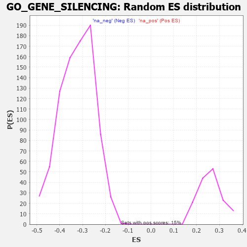

| | | Dataset | 7d |
| Phenotype | NoPhenotypeAvailable |
| Upregulated in class | na_pos |
| GeneSet | GO_GENE_SILENCING |
| Enrichment Score (ES) | 0.42382315 |
| Normalized Enrichment Score (NES) | 1.6175528 |
| Nominal p-value | 0.0 |
| FDR q-value | 0.22416098 |
| FWER p-Value | 1.0 |
Table: GSEA Results Summary
 Fig 1: Enrichment plot: GO_GENE_SILENCING
Fig 1: Enrichment plot: GO_GENE_SILENCING
Profile of the Running ES Score & Positions of GeneSet Members on the Rank Ordered List
| PROBE | GENE SYMBOL | GENE_TITLE | RANK IN GENE LIST | RANK METRIC SCORE | RUNNING ES | CORE ENRICHMENT | | 1 | H2AX | | | 20 | 4.738 | 0.1436 | Yes |
| 2 | CDC45 | | | 239 | 0.950 | 0.1453 | Yes |
| 3 | NUP85 | | | 329 | 0.772 | 0.1579 | Yes |
| 4 | CNOT7 | | | 348 | 0.750 | 0.1788 | Yes |
| 5 | H2AJ | | | 404 | 0.697 | 0.1933 | Yes |
| 6 | EED | | | 409 | 0.690 | 0.2141 | Yes |
| 7 | HAT1 | | | 454 | 0.659 | 0.2288 | Yes |
| 8 | CNOT6 | | | 462 | 0.655 | 0.2482 | Yes |
| 9 | NUP54 | | | 505 | 0.627 | 0.2622 | Yes |
| 10 | CNOT2 | | | 514 | 0.625 | 0.2804 | Yes |
| 11 | HIRA | | | 568 | 0.608 | 0.2925 | Yes |
| 12 | SNIP1 | | | 604 | 0.593 | 0.3064 | Yes |
| 13 | RBM4 | | | 649 | 0.576 | 0.3186 | Yes |
| 14 | TDRD9 | | | 761 | 0.542 | 0.3212 | Yes |
| 15 | RAE1 | | | 827 | 0.524 | 0.3292 | Yes |
| 16 | HDAC5 | | | 900 | 0.506 | 0.3357 | Yes |
| 17 | NUP93 | | | 1127 | 0.459 | 0.3212 | Yes |
| 18 | NUP43 | | | 1160 | 0.453 | 0.3311 | Yes |
| 19 | CLP1 | | | 1182 | 0.450 | 0.3423 | Yes |
| 20 | PUS10 | | | 1249 | 0.438 | 0.3475 | Yes |
| 21 | CNOT3 | | | 1274 | 0.435 | 0.3579 | Yes |
| 22 | SCMH1 | | | 1300 | 0.428 | 0.3679 | Yes |
| 23 | FKBP6 | | | 1301 | 0.428 | 0.3811 | Yes |
| 24 | NRDE2 | | | 1320 | 0.425 | 0.3919 | Yes |
| 25 | UBR2 | | | 1334 | 0.423 | 0.4033 | Yes |
| 26 | NUP88 | | | 1429 | 0.404 | 0.4039 | Yes |
| 27 | DDX4 | | | 1436 | 0.403 | 0.4156 | Yes |
| 28 | XPO5 | | | 1700 | 0.357 | 0.3933 | Yes |
| 29 | AGO2 | | | 1767 | 0.343 | 0.3955 | Yes |
| 30 | NUP58 | | | 1787 | 0.340 | 0.4036 | Yes |
| 31 | FMR1 | | | 1816 | 0.334 | 0.4104 | Yes |
| 32 | TDRKH | | | 1836 | 0.331 | 0.4181 | Yes |
| 33 | NUP62 | | | 1871 | 0.324 | 0.4238 | Yes |
| 34 | CDK2 | | | 2226 | 0.272 | 0.3874 | No |
| 35 | WTIP | | | 2228 | 0.272 | 0.3957 | No |
| 36 | SEC13 | | | 2330 | 0.256 | 0.3908 | No |
| 37 | SIN3A | | | 2361 | 0.251 | 0.3947 | No |
| 38 | NCBP2 | | | 2383 | 0.248 | 0.3997 | No |
| 39 | NUP50 | | | 2625 | 0.209 | 0.3756 | No |
| 40 | PUM2 | | | 2627 | 0.209 | 0.3820 | No |
| 41 | MARF1 | | | 2704 | 0.198 | 0.3785 | No |
| 42 | SRRT | | | 3050 | 0.143 | 0.3392 | No |
| 43 | NUP98 | | | 3261 | 0.112 | 0.3161 | No |
| 44 | ASZ1 | | | 3299 | 0.106 | 0.3147 | No |
| 45 | SMAD3 | | | 3303 | 0.105 | 0.3175 | No |
| 46 | TDRD1 | | | 3321 | 0.101 | 0.3185 | No |
| 47 | SMAD1 | | | 3337 | 0.099 | 0.3196 | No |
| 48 | TUT4 | | | 3394 | 0.090 | 0.3153 | No |
| 49 | CNOT1 | | | 3473 | 0.081 | 0.3079 | No |
| 50 | ERI1 | | | 3486 | 0.079 | 0.3089 | No |
| 51 | DHX9 | | | 3693 | 0.044 | 0.2842 | No |
| 52 | DGCR8 | | | 3792 | 0.029 | 0.2726 | No |
| 53 | NCOR1 | | | 3961 | 0.000 | 0.2514 | No |
| 54 | DDX17 | | | 4161 | -0.035 | 0.2273 | No |
| 55 | RAN | | | 4299 | -0.059 | 0.2118 | No |
| 56 | CTBP1 | | | 4323 | -0.064 | 0.2109 | No |
| 57 | HELZ | | | 4763 | -0.150 | 0.1599 | No |
| 58 | TERT | | | 4801 | -0.157 | 0.1601 | No |
| 59 | PPM1D | | | 4805 | -0.158 | 0.1646 | No |
| 60 | SND1 | | | 5244 | -0.256 | 0.1171 | No |
| 61 | KCNQ1 | | | 5918 | -0.441 | 0.0455 | No |
| 62 | PCGF2 | | | 5943 | -0.451 | 0.0564 | No |
| 63 | TUT7 | | | 5997 | -0.471 | 0.0642 | No |
| 64 | SMAD2 | | | 6216 | -0.541 | 0.0533 | No |
| 65 | TPR | | | 6597 | -0.709 | 0.0271 | No |
| 66 | EGFR | | | 6708 | -0.765 | 0.0367 | No |
| 67 | DOT1L | | | 6939 | -0.897 | 0.0353 | No |
| 68 | DPY30 | | | 6976 | -0.923 | 0.0592 | No |
| 69 | DDX5 | | | 7152 | -1.037 | 0.0690 | No |
| 70 | DYDC1 | | | 7246 | -1.118 | 0.0917 | No |
Table: GSEA details [plain text format]

Fig 2: GO_GENE_SILENCING: Random ES distribution
Gene set null distribution of ES for GO_GENE_SILENCING